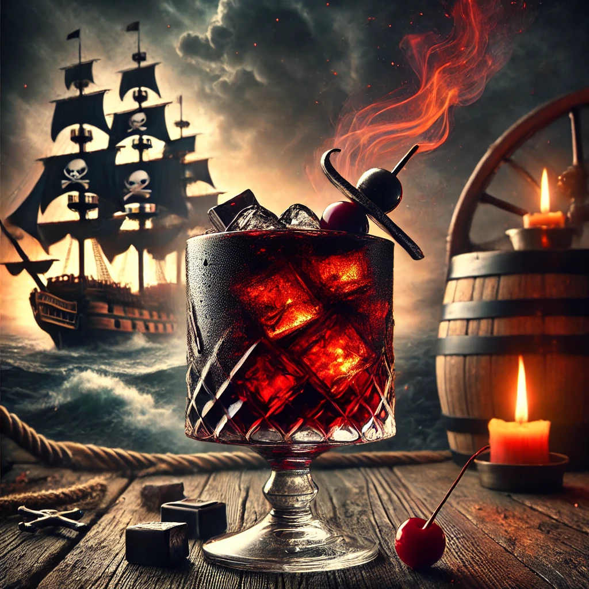

THE BUSTY MERMAID

Blackbeard’s Revenge
Ingredienser og Oppskrift:
Ahoy, matroser! Velkommen til den legendariske **Blackbeard’s Revenge** – en drink for de som tør å møte sjøens mørkeste hemmeligheter. Denne drinken er både mørk og mystisk, fylt med kraften fra et krigsskip og den eksplosive smaken av rom som kan få selv de modigste pirater til å sette kurs mot land for en pause.
Så, hva inneholder denne potente drinken? Her er oppskriften for å gjøre Blackbeard stolt:
- 1 del **mørk rom** (en pirats favoritt, med en smak som kan få sjøen til å roes)
- 1 del **raspberry puré** (for den intense røde fargen som minner om både blod og skattkister)
- 1 skvett **limejuice** (for den bitre smaken som gir den perfekte balansen)
- 1 skvett **angostura bitters** (den hemmelige ingrediensen som setter sjømatrosene i ferd med å svømme bort)
- Et dash **vodka** (for å gi drinken den nødvendige styrken)
Hvordan lage denne drinken:
- Fyll en shaker med is og tøm alle ingrediensene oppi.
- Rist godt som om du er på vei gjennom et stormfullt hav, klar til å møte skjebnen!
- Sil drinken i et høyt glass fylt med is og pynt med en twist lime eller et par kirsebær på toppen.
- Skål for eventyret – vær forberedt på å få vinden i håret!
OBS: Denne drinken har rykte på seg for å sette de beste piratene i et eventyr... eller kanskje en fortvilet søken etter mer rom!